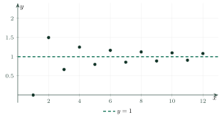

Limits of SequencesGiới hạn của dãy số
Grade 11 · Topic: Limits and ContinuityLớp 11 · Chủ đề: Giới hạn. Hàm số liên tục
1Lesson IntroductionGiới thiệu bài học
Learning goalsMục tiêu bài học
By the end of this lesson you can:
Sau bài học này, em có thể:
understand the limit of a sequence and the basic limits;
hiểu khái niệm giới hạn của dãy số và các giới hạn cơ bản;
use the limit theorems to find limits of quotients, powers and roots;
dùng các định lí về giới hạn để tính giới hạn của thương, lũy thừa, căn thức;
find the sum of an infinite geometric series and write a repeating decimal as a fraction;
tính tổng cấp số nhân lùi vô hạn và viết số thập phân vô hạn tuần hoàn thành phân số;
recognise infinite limits.
nhận biết giới hạn vô cực.
2Mathematical VocabularyTừ vựng Toán học
limit of a sequence – the number \(a\) that \(u_n\) gets as close to as we like when \(n\) is large enough: \(\lim u_n=a\).
giới hạn của dãy số – số \(a\) mà \(u_n\) gần \(a\) bao nhiêu cũng được khi \(n\) đủ lớn: \(\lim u_n=a\).
converge – to have a finite limit.
hội tụ (có giới hạn hữu hạn) – có giới hạn là một số thực.
infinite geometric series (with \(|q|\lt1\)) – a geometric progression with \(|q|\lt1\); its sum is \(S=\dfrac{u_1}{1-q}\).
cấp số nhân lùi vô hạn – cấp số nhân có công bội \(|q|\lt1\); tổng của nó là \(S=\dfrac{u_1}{1-q}\).
infinite limit – \(\lim u_n=+\infty\): \(u_n\) becomes larger than any number when \(n\) is large.
giới hạn vô cực – \(\lim u_n=+\infty\): \(u_n\) lớn hơn mọi số dương cho trước khi \(n\) đủ lớn.
repeating decimal – a decimal whose digits repeat forever, like \(0.(3)=0.333\dots\).
số thập phân vô hạn tuần hoàn – số thập phân có nhóm chữ số lặp lại mãi, như \(0{,}(3)=0{,}333\dots\).
conjugate (multiply by) – multiply by \(\sqrt A+B\) to remove a square root in \(\sqrt A-B\).
nhân liên hợp – nhân với \(\sqrt A+B\) để khử căn trong \(\sqrt A-B\).
3Useful English PhrasesCụm từ tiếng Anh thường gặp
Find the limit of the sequence.
Tìm giới hạn của dãy số.
Divide the numerator and the denominator by \(n^2\).
Chia cả tử và mẫu cho \(n^2\).
The sequence tends to zero.
Dãy số dần tới 0.
Find the sum of the infinite geometric series.
Tính tổng của cấp số nhân lùi vô hạn.
The limit is plus infinity.
Giới hạn bằng dương vô cực.
4Prerequisite ReviewÔn tập kiến thức nền
From Bài 5–7: a sequence \((u_n)\); a geometric progression \(u_n=u_1q^{n-1}\) has \(S_n=u_1\dfrac{1-q^n}{1-q}\) (\(q\ne1\)). Also \(\left|q^n\right|=|q|^n\) becomes very small when \(|q|\lt1\).
Từ Bài 5–7: dãy số \((u_n)\); cấp số nhân \(u_n=u_1q^{n-1}\) có \(S_n=u_1\dfrac{1-q^n}{1-q}\) (\(q\ne1\)). Khi \(|q|\lt1\) thì \(|q^n|=|q|^n\) rất nhỏ khi \(n\) lớn.
5TheoryLý thuyết
5.1 Finite limitsGiới hạn hữu hạn của dãy số
DefinitionĐịnh nghĩa
\(\lim u_n=0\) if \(|u_n|\) can be made smaller than any positive number, for all \(n\) large enough.
\(\lim\limits_{n\to+\infty}u_n=0\) nếu \(|u_n|\) có thể nhỏ hơn một số dương bé tùy ý, kể từ một số hạng nào đó trở đi.
\(\lim u_n=a\iff\lim(u_n-a)=0\).
\(\lim\limits_{n\to+\infty}u_n=a\iff\lim\limits_{n\to+\infty}(u_n-a)=0\).

Basic limitsCác giới hạn cơ bản
TheoremĐịnh lí
If \(\lim u_n=a\), \(\lim v_n=b\) then \(\lim(u_n\pm v_n)=a\pm b\), \(\lim u_nv_n=ab\), \(\lim\dfrac{u_n}{v_n}=\dfrac ab\) (\(b\ne0\)); if \(u_n\ge0\) then \(a\ge0\) and \(\lim\sqrt{u_n}=\sqrt a\).
Nếu \(\lim u_n=a\), \(\lim v_n=b\) thì \(\lim(u_n\pm v_n)=a\pm b\), \(\lim u_nv_n=ab\), \(\lim\dfrac{u_n}{v_n}=\dfrac ab\) (\(b\ne0\)); nếu \(u_n\ge0\) thì \(a\ge0\) và \(\lim\sqrt{u_n}=\sqrt a\).
5.2 Sum of an infinite geometric seriesTổng của cấp số nhân lùi vô hạn
FormulaCông thức
Because \(S_n=u_1\dfrac{1-q^n}{1-q}\) and \(q^n\to0\).
Vì \(S_n=u_1\dfrac{1-q^n}{1-q}\) và \(q^n\to0\).
5.3 Infinite limitsGiới hạn vô cực
RulesQuy tắc
\(\lim n^k=+\infty\) (\(k\in\mathbb N^*\)); \(\lim q^n=+\infty\) (\(q\gt1\)).
\(\lim n^k=+\infty\) (\(k\in\mathbb N^*\)); \(\lim q^n=+\infty\) (\(q\gt1\)).
If \(\lim u_n=a\) and \(\lim v_n=\pm\infty\) then \(\lim\dfrac{u_n}{v_n}=0\).
Nếu \(\lim u_n=a\) và \(\lim v_n=\pm\infty\) thì \(\lim\dfrac{u_n}{v_n}=0\).
If \(\lim u_n=a\gt0\), \(\lim v_n=0\) and \(v_n\gt0\), then \(\lim\dfrac{u_n}{v_n}=+\infty\). If \(\lim u_n=+\infty\) and \(\lim v_n=a\gt0\), then \(\lim u_nv_n=+\infty\) (change signs as needed).
Nếu \(\lim u_n=a\gt0\), \(\lim v_n=0\) và \(v_n\gt0\) thì \(\lim\dfrac{u_n}{v_n}=+\infty\). Nếu \(\lim u_n=+\infty\), \(\lim v_n=a\gt0\) thì \(\lim u_nv_n=+\infty\) (đổi dấu tương ứng).
Watch out!Lưu ý
\(\infty-\infty\), \(\dfrac{\infty}{\infty}\), \(\dfrac00\), \(0\cdot\infty\) are not numbers: transform first (divide by the highest power, multiply by the conjugate). For a rational expression: same degree → ratio of leading coefficients; numerator of lower degree → 0; higher degree → \(\pm\infty\).
\(\infty-\infty\), \(\dfrac{\infty}{\infty}\), \(\dfrac00\), \(0\cdot\infty\) không phải là số: phải biến đổi trước (chia cho lũy thừa cao nhất, nhân liên hợp). Với phân thức: cùng bậc → tỉ số hệ số bậc cao nhất; tử bậc thấp hơn → 0; tử bậc cao hơn → \(\pm\infty\).
6Worked ExamplesVí dụ có lời giải
ExampleVí dụ 1BasicCơ bản – Basic limitsGiới hạn cơ bản
Find \(\lim\limits_{n\to+\infty}\left(3+\dfrac{2}{n^2}\right)\), \(\lim\limits_{n\to+\infty}\left(\dfrac23\right)^n\) and \(\lim\limits_{n\to+\infty}\dfrac{(-1)^n}{n}\).
Tính \(\lim\limits_{n\to+\infty}\left(3+\dfrac{2}{n^2}\right)\), \(\lim\limits_{n\to+\infty}\left(\dfrac23\right)^n\) và \(\lim\limits_{n\to+\infty}\dfrac{(-1)^n}{n}\).
Analysis: Use the basic limits.
Phân tích: Dùng các giới hạn cơ bản.
\(\lim3=3\), \(\lim\dfrac{2}{n^2}=0\), so the first limit is 3.
\(\lim3=3\), \(\lim\dfrac{2}{n^2}=0\) nên giới hạn thứ nhất bằng 3.
\(\left|\frac23\right|\lt1\): the second limit is 0.
\(\left|\frac23\right|\lt1\): giới hạn thứ hai bằng 0.
\(\left|\dfrac{(-1)^n}{n}\right|=\dfrac1n\to0\): the third limit is 0.
\(\left|\dfrac{(-1)^n}{n}\right|=\dfrac1n\to0\): giới hạn thứ ba bằng 0.
\(3\); \(0\); \(0\).
\(3\); \(0\); \(0\).
ExampleVí dụ 2BasicCơ bản – A rational expressionPhân thức theo \(n\)
Find \(\lim\limits_{n\to+\infty}\dfrac{2n^2-3n+1}{5n^2+4}\).
Tính \(\lim\limits_{n\to+\infty}\dfrac{2n^2-3n+1}{5n^2+4}\).
Analysis: Divide by \(n^2\).
Phân tích: Chia tử và mẫu cho \(n^2\).
\(\dfrac{2-\frac3n+\frac1{n^2}}{5+\frac4{n^2}}\to\dfrac{2-0+0}{5+0}\).
\(\dfrac{2-\frac3n+\frac1{n^2}}{5+\frac4{n^2}}\to\dfrac{2-0+0}{5+0}\).
\(\dfrac25\).
\(\dfrac25\).
ExampleVí dụ 3IntermediateTrung bình – Powers and rootsLũy thừa và căn thức
Find (a) \(\lim\limits_{n\to+\infty}\dfrac{3^n-2^{n+1}}{3^{n+1}+1}\); (b) \(\lim\limits_{n\to+\infty}\left(\sqrt{n^2+4n}-n\right)\).
Tính (a) \(\lim\limits_{n\to+\infty}\dfrac{3^n-2^{n+1}}{3^{n+1}+1}\); (b) \(\lim\limits_{n\to+\infty}\left(\sqrt{n^2+4n}-n\right)\).
Analysis: (a) divide by \(3^n\); (b) multiply by the conjugate.
Phân tích: (a) chia cho \(3^n\); (b) nhân liên hợp.
(a) \(\dfrac{1-2\left(\frac23\right)^n}{3+\left(\frac13\right)^n}\to\dfrac13\).
(a) \(\dfrac{1-2\left(\frac23\right)^n}{3+\left(\frac13\right)^n}\to\dfrac13\).
(b) \(\dfrac{4n}{\sqrt{n^2+4n}+n}=\dfrac{4}{\sqrt{1+\frac4n}+1}\to\dfrac42=2\).
(b) \(\dfrac{4n}{\sqrt{n^2+4n}+n}=\dfrac{4}{\sqrt{1+\frac4n}+1}\to\dfrac42=2\).
(a) \(\dfrac13\); (b) \(2\). Note: in (b), \(\infty-\infty\) is not 0.
(a) \(\dfrac13\); (b) \(2\). Chú ý: ở (b), \(\infty-\infty\) không bằng 0.
ExampleVí dụ 4IntermediateTrung bình – Series and decimalsTổng vô hạn và số thập phân
(a) Find \(1-\dfrac12+\dfrac14-\dfrac18+\dots\). (b) Write \(0.(27)=0.2727\dots\) as a fraction.
(a) Tính \(1-\dfrac12+\dfrac14-\dfrac18+\dots\). (b) Viết \(0{,}(27)=0{,}2727\dots\) dưới dạng phân số.
Analysis: Both are infinite geometric series.
Phân tích: Cả hai đều là cấp số nhân lùi vô hạn.
(a) \(u_1=1\), \(q=-\dfrac12\): \(S=\dfrac{1}{1+\frac12}=\dfrac23\).
(a) \(u_1=1\), \(q=-\dfrac12\): \(S=\dfrac{1}{1+\frac12}=\dfrac23\).
(b) \(0.(27)=\dfrac{27}{100}+\dfrac{27}{100^2}+\dots=\dfrac{\frac{27}{100}}{1-\frac1{100}}=\dfrac{27}{99}\).
(b) \(0{,}(27)=\dfrac{27}{100}+\dfrac{27}{100^2}+\dots=\dfrac{\frac{27}{100}}{1-\frac1{100}}=\dfrac{27}{99}\).
(a) \(\dfrac23\); (b) \(\dfrac{3}{11}\).
(a) \(\dfrac23\); (b) \(\dfrac{3}{11}\).
ExampleVí dụ 5AdvancedNâng cao – A bouncing ballQuả bóng nảy
A ball is dropped from 2 m. After each bounce it rises to \(\frac34\) of the previous height. Find the total distance travelled (assume it bounces forever, with smaller and smaller heights).
Thả quả bóng từ độ cao 2 m. Sau mỗi lần chạm đất, bóng nảy lên bằng \(\frac34\) độ cao trước đó. Tính tổng quãng đường bóng đi được (giả sử bóng nảy mãi với độ cao ngày càng nhỏ).
Analysis: After the first fall, each bounce adds an up and a down of the same length.
Phân tích: Sau lần rơi đầu, mỗi lần nảy gồm một đoạn lên và một đoạn xuống bằng nhau.
Heights after bounces: \(2\cdot\frac34, 2\left(\frac34\right)^2,\dots\), sum \(=\dfrac{\frac32}{1-\frac34}=6\) m.
Các độ cao sau mỗi lần nảy: \(2\cdot\frac34, 2\left(\frac34\right)^2,\dots\), tổng \(=\dfrac{\frac32}{1-\frac34}=6\) m.
Total \(=2+2\cdot6\).
Tổng quãng đường \(=2+2\cdot6\).
14 m – a finite distance, although the ball bounces infinitely many times.
14 m – một quãng đường hữu hạn dù bóng nảy vô số lần.
7PracticeBài tập luyện tập
A. Multiple ChoiceA. Trắc nghiệm nhiều lựa chọn
\(\lim\limits_{n\to+\infty}\dfrac{3n^{2}-n+2}{6n^{2}+5}=\)…
\(\lim\limits_{n\to+\infty}\dfrac{3n^{2}-n+2}{6n^{2}+5}=\)…
Answer: d. Divide by the highest power of \(n\) in the denominator.
Đáp án d. Chia tử và mẫu cho lũy thừa bậc cao nhất của \(n\) ở mẫu.
A square of area \(16\ \text{cm}^2\) is painted; then a square of \(\dfrac{1}{2}\) of that area, then \(\dfrac{1}{2}\) of the previous one, and so on forever. The total painted area is…
Tô một hình vuông diện tích \(16\ \text{cm}^2\); tiếp theo tô hình vuông có diện tích bằng \(\dfrac{1}{2}\) hình trước, rồi \(\dfrac{1}{2}\) hình vừa tô, cứ thế mãi. Tổng diện tích được tô là…
Answer: b. \(S=\dfrac{u_1}{1-q}=\dfrac{16}{1-\dfrac{1}{2}}=32\).
Đáp án b. \(S=\dfrac{u_1}{1-q}=\dfrac{16}{1-\dfrac{1}{2}}=32\).
\(\lim\limits_{n\to+\infty}\left(\sqrt{n^2+6n}-n\right)=\)…
\(\lim\limits_{n\to+\infty}\left(\sqrt{n^2+6n}-n\right)=\)…
Answer: c. Conjugate: \(\dfrac{6n}{\sqrt{n^2+6n}+n}\to\dfrac{6}{2}\).
Đáp án c. Nhân liên hợp: \(\dfrac{6n}{\sqrt{n^2+6n}+n}\to\dfrac{6}{2}\).
B. True or FalseB. Đúng hoặc sai
\(\lim\limits_{n\to+\infty}\left(\dfrac{5}{4}\right)^n=0\).
\(\lim\limits_{n\to+\infty}\left(\dfrac{5}{4}\right)^n=0\).
\(\frac54\gt1\), so the limit is \(+\infty\).
\(\frac54\gt1\) nên giới hạn là \(+\infty\).
\(0.(5)=\dfrac{5}{9}\).
\(0{,}(5)=\dfrac{5}{9}\).
\(0.(5)=\dfrac{5}{9}=\dfrac{5}{9}\).
\(0{,}(5)=\dfrac{5}{9}=\dfrac{5}{9}\).
C. Short AnswerC. Trả lời ngắn
A ball is dropped from \(5\) m and each time rises to \(\dfrac{1}{2}\) of the previous height. Find the total distance travelled (m).
Thả quả bóng từ độ cao \(5\) m, mỗi lần nảy lên bằng \(\dfrac{1}{2}\) độ cao trước. Tính tổng quãng đường bóng đi được (m).
Enter a number.
Nhập một số.
\(5+2\cdot\dfrac{\dfrac{5}{2}}{1-\dfrac{1}{2}}=15\).
\(5+2\cdot\dfrac{\dfrac{5}{2}}{1-\dfrac{1}{2}}=15\).
Find \(\lim\limits_{n\to+\infty}\dfrac{2\cdot3^{n+1}+5}{3^{n}+1}\).
Tính \(\lim\limits_{n\to+\infty}\dfrac{2\cdot3^{n+1}+5}{3^{n}+1}\).
Enter a number.
Nhập một số.
Divide by \(3^n\): \(\dfrac{2\cdot3+\frac{5}{3^n}}{1+\frac{1}{3^n}}\to6\).
Chia cho \(3^n\): \(\dfrac{2\cdot3+\frac{5}{3^n}}{1+\frac{1}{3^n}}\to6\).
A. Multiple ChoiceA. Trắc nghiệm nhiều lựa chọn
\(\lim\limits_{n\to+\infty}\dfrac{4n+1}{2n^{2}-3n+1}=\)…
\(\lim\limits_{n\to+\infty}\dfrac{4n+1}{2n^{2}-3n+1}=\)…
Answer: a. Divide by the highest power of \(n\) in the denominator.
Đáp án a. Chia tử và mẫu cho lũy thừa bậc cao nhất của \(n\) ở mẫu.
A square of area \(9\ \text{cm}^2\) is painted; then a square of \(\dfrac{1}{3}\) of that area, then \(\dfrac{1}{3}\) of the previous one, and so on forever. The total painted area is…
Tô một hình vuông diện tích \(9\ \text{cm}^2\); tiếp theo tô hình vuông có diện tích bằng \(\dfrac{1}{3}\) hình trước, rồi \(\dfrac{1}{3}\) hình vừa tô, cứ thế mãi. Tổng diện tích được tô là…
Answer: a. \(S=\dfrac{u_1}{1-q}=\dfrac{9}{1-\dfrac{1}{3}}=\dfrac{27}{2}\).
Đáp án a. \(S=\dfrac{u_1}{1-q}=\dfrac{9}{1-\dfrac{1}{3}}=\dfrac{27}{2}\).
\(\lim\limits_{n\to+\infty}\left(\sqrt{n^2+10n}-n\right)=\)…
\(\lim\limits_{n\to+\infty}\left(\sqrt{n^2+10n}-n\right)=\)…
Answer: c. Conjugate: \(\dfrac{10n}{\sqrt{n^2+10n}+n}\to\dfrac{10}{2}\).
Đáp án c. Nhân liên hợp: \(\dfrac{10n}{\sqrt{n^2+10n}+n}\to\dfrac{10}{2}\).
B. True or FalseB. Đúng hoặc sai
\(\lim\limits_{n\to+\infty}\dfrac{n^3+1}{2n^2-n}=+\infty\).
\(\lim\limits_{n\to+\infty}\dfrac{n^3+1}{2n^2-n}=+\infty\).
The numerator has a higher degree and the leading coefficients are positive.
Tử có bậc cao hơn và các hệ số bậc cao nhất dương.
\(0.(36)=\dfrac{9}{25}\).
\(0{,}(36)=\dfrac{9}{25}\).
\(0.(36)=\dfrac{36}{99}=\dfrac{4}{11}\).
\(0{,}(36)=\dfrac{36}{99}=\dfrac{4}{11}\).
C. Short AnswerC. Trả lời ngắn
A ball is dropped from \(3\) m and each time rises to \(\dfrac{2}{3}\) of the previous height. Find the total distance travelled (m).
Thả quả bóng từ độ cao \(3\) m, mỗi lần nảy lên bằng \(\dfrac{2}{3}\) độ cao trước. Tính tổng quãng đường bóng đi được (m).
Enter a number.
Nhập một số.
\(3+2\cdot\dfrac{2}{1-\dfrac{2}{3}}=15\).
\(3+2\cdot\dfrac{2}{1-\dfrac{2}{3}}=15\).
Find \(\lim\limits_{n\to+\infty}\dfrac{3\cdot2^{n+1}+4}{2^{n}+1}\).
Tính \(\lim\limits_{n\to+\infty}\dfrac{3\cdot2^{n+1}+4}{2^{n}+1}\).
Enter a number.
Nhập một số.
Divide by \(2^n\): \(\dfrac{3\cdot2+\frac{4}{2^n}}{1+\frac{1}{2^n}}\to6\).
Chia cho \(2^n\): \(\dfrac{3\cdot2+\frac{4}{2^n}}{1+\frac{1}{2^n}}\to6\).
A. Multiple ChoiceA. Trắc nghiệm nhiều lựa chọn
\(\lim\limits_{n\to+\infty}\dfrac{-5n^{2}+2n}{10n^{2}+n-7}=\)…
\(\lim\limits_{n\to+\infty}\dfrac{-5n^{2}+2n}{10n^{2}+n-7}=\)…
Answer: a. Divide by the highest power of \(n\) in the denominator.
Đáp án a. Chia tử và mẫu cho lũy thừa bậc cao nhất của \(n\) ở mẫu.
A square of area \(25\ \text{cm}^2\) is painted; then a square of \(\dfrac{4}{5}\) of that area, then \(\dfrac{4}{5}\) of the previous one, and so on forever. The total painted area is…
Tô một hình vuông diện tích \(25\ \text{cm}^2\); tiếp theo tô hình vuông có diện tích bằng \(\dfrac{4}{5}\) hình trước, rồi \(\dfrac{4}{5}\) hình vừa tô, cứ thế mãi. Tổng diện tích được tô là…
Answer: c. \(S=\dfrac{u_1}{1-q}=\dfrac{25}{1-\dfrac{4}{5}}=125\).
Đáp án c. \(S=\dfrac{u_1}{1-q}=\dfrac{25}{1-\dfrac{4}{5}}=125\).
\(\lim\limits_{n\to+\infty}\left(\sqrt{n^2+8n}-n\right)=\)…
\(\lim\limits_{n\to+\infty}\left(\sqrt{n^2+8n}-n\right)=\)…
Answer: c. Conjugate: \(\dfrac{8n}{\sqrt{n^2+8n}+n}\to\dfrac{8}{2}\).
Đáp án c. Nhân liên hợp: \(\dfrac{8n}{\sqrt{n^2+8n}+n}\to\dfrac{8}{2}\).
B. True or FalseB. Đúng hoặc sai
\(\lim\limits_{n\to+\infty}\left(\sqrt{n+1}-\sqrt n\right)=0\).
\(\lim\limits_{n\to+\infty}\left(\sqrt{n+1}-\sqrt n\right)=0\).
\(\sqrt{n+1}-\sqrt n=\dfrac{1}{\sqrt{n+1}+\sqrt n}\to0\).
\(\sqrt{n+1}-\sqrt n=\dfrac{1}{\sqrt{n+1}+\sqrt n}\to0\).
\(0.(12)=\dfrac{4}{33}\).
\(0{,}(12)=\dfrac{4}{33}\).
\(0.(12)=\dfrac{12}{99}=\dfrac{4}{33}\).
\(0{,}(12)=\dfrac{12}{99}=\dfrac{4}{33}\).
C. Short AnswerC. Trả lời ngắn
A ball is dropped from \(4\) m and each time rises to \(\dfrac{3}{5}\) of the previous height. Find the total distance travelled (m).
Thả quả bóng từ độ cao \(4\) m, mỗi lần nảy lên bằng \(\dfrac{3}{5}\) độ cao trước. Tính tổng quãng đường bóng đi được (m).
Enter a number.
Nhập một số.
\(4+2\cdot\dfrac{\dfrac{12}{5}}{1-\dfrac{3}{5}}=16\).
\(4+2\cdot\dfrac{\dfrac{12}{5}}{1-\dfrac{3}{5}}=16\).
Find \(\lim\limits_{n\to+\infty}\dfrac{1\cdot5^{n+1}+2}{5^{n}+1}\).
Tính \(\lim\limits_{n\to+\infty}\dfrac{1\cdot5^{n+1}+2}{5^{n}+1}\).
Enter a number.
Nhập một số.
Divide by \(5^n\): \(\dfrac{1\cdot5+\frac{2}{5^n}}{1+\frac{1}{5^n}}\to5\).
Chia cho \(5^n\): \(\dfrac{1\cdot5+\frac{2}{5^n}}{1+\frac{1}{5^n}}\to5\).
D. Self-practice: Multiple ChoiceD. Tự luyện: trắc nghiệm
\(\lim\limits_{n\to+\infty}\dfrac{4n^{2}+3n}{2n^{2}+2n-5}=\)…
\(\lim\limits_{n\to+\infty}\dfrac{4n^{2}+3n}{2n^{2}+2n-5}=\)…
Answer: a. Divide numerator and denominator by \(n^2\) (the highest power of the denominator).
Đáp án a. Chia cả tử và mẫu cho \(n^2\) (lũy thừa bậc cao nhất của mẫu).
\(\lim\limits_{n\to+\infty}\dfrac{2n^{2}+3}{-n+1}=\)…
\(\lim\limits_{n\to+\infty}\dfrac{2n^{2}+3}{-n+1}=\)…
Answer: c. \(\dfrac{2n^{2}+3}{-n+1}=n\cdot\dfrac{2+\frac{3}{n^2}}{-1+\frac{1}{n}}\); the second factor tends to \(-2\).
Đáp án c. \(\dfrac{2n^{2}+3}{-n+1}=n\cdot\dfrac{2+\frac{3}{n^2}}{-1+\frac{1}{n}}\); thừa số sau dần tới \(-2\).
The sum of the infinite geometric series \(3+2+\dfrac{4}{3}+\dots\) is…
Tổng của cấp số nhân lùi vô hạn \(3+2+\dfrac{4}{3}+\dots\) bằng…
Answer: c. \(u_1=3\), \(q=\dfrac{2}{3}\): \(S=\dfrac{u_1}{1-q}=9\).
Đáp án c. \(u_1=3\), \(q=\dfrac{2}{3}\): \(S=\dfrac{u_1}{1-q}=9\).
The repeating decimal \(0.(40)=0.4040\dots\) equals…
Số thập phân vô hạn tuần hoàn \(0{,}(40)=0{,}4040\dots\) bằng phân số…
Answer: b. \(\dfrac{40}{10^{2}}+\dfrac{40}{10^{4}}+\dots\) is a geometric series with \(q=10^{-2}\): sum \(=\dfrac{40}{99}=\dfrac{40}{99}\).
Đáp án b. Đây là tổng cấp số nhân lùi vô hạn với \(u_1=\dfrac{40}{10^{2}}\), \(q=10^{-2}\): tổng \(=\dfrac{40}{99}=\dfrac{40}{99}\).
\(\lim\limits_{n\to+\infty}\dfrac{-3^n+2^n}{-2\cdot3^n+4}=\)…
\(\lim\limits_{n\to+\infty}\dfrac{-3^n+2^n}{-2\cdot3^n+4}=\)…
Answer: d. Divide by \(3^n\); \(\left(\frac{2}{3}\right)^n\to0\) and \(\frac{4}{3^n}\to0\).
Đáp án d. Chia tử và mẫu cho \(3^n\); \(\left(\frac{2}{3}\right)^n\to0\), \(\frac{4}{3^n}\to0\).
\(\lim\limits_{n\to+\infty}\left(\sqrt{n^2+5n}-n\right)=\)…
\(\lim\limits_{n\to+\infty}\left(\sqrt{n^2+5n}-n\right)=\)…
Answer: a. Multiply by the conjugate: \(\dfrac{5n}{\sqrt{n^2+5n}+n}\to\dfrac{5}{2}\).
Đáp án a. Nhân liên hợp: \(\dfrac{5n}{\sqrt{n^2+5n}+n}\to\dfrac{5}{2}\).
\(\lim\limits_{n\to+\infty}\left(-\dfrac{1}{2}\right)^n=\)…
\(\lim\limits_{n\to+\infty}\left(-\dfrac{1}{2}\right)^n=\)…
Answer: c. \(\lim q^n=0\) if \(|q|\lt1\); \(\lim q^n=+\infty\) if \(q\gt1\).
Đáp án c. \(\lim q^n=0\) nếu \(|q|\lt1\); \(\lim q^n=+\infty\) nếu \(q\gt1\).
A ball is dropped from \(10\) m. After each bounce it rises to \(\dfrac{3}{4}\) of the previous height. The total distance it travels (until it stops) is…
Thả một quả bóng từ độ cao \(10\) m. Sau mỗi lần chạm đất, bóng nảy lên bằng \(\dfrac{3}{4}\) độ cao trước đó. Tổng quãng đường bóng đi được đến khi dừng là…
Answer: d. Down \(10\) m, then up and down each bounce: \(10+2\cdot\dfrac{10\cdot\dfrac{3}{4}}{1-\dfrac{3}{4}}=70\).
Đáp án d. Rơi \(10\) m, sau đó mỗi lần nảy đi lên rồi xuống: \(10+2\cdot\dfrac{10\cdot\dfrac{3}{4}}{1-\dfrac{3}{4}}=70\).
D. Self-practice: Multiple ChoiceD. Tự luyện: trắc nghiệm
\(\lim\limits_{n\to+\infty}\dfrac{-2n+1}{-n^{2}-2n+5}=\)…
\(\lim\limits_{n\to+\infty}\dfrac{-2n+1}{-n^{2}-2n+5}=\)…
Answer: d. Divide numerator and denominator by \(n^2\) (the highest power of the denominator).
Đáp án d. Chia cả tử và mẫu cho \(n^2\) (lũy thừa bậc cao nhất của mẫu).
\(\lim\limits_{n\to+\infty}\dfrac{-3n^{2}+4}{n+3}=\)…
\(\lim\limits_{n\to+\infty}\dfrac{-3n^{2}+4}{n+3}=\)…
Answer: c. \(\dfrac{-3n^{2}+4}{n+3}=n\cdot\dfrac{-3+\frac{4}{n^2}}{1+\frac{3}{n}}\); the second factor tends to \(-3\).
Đáp án c. \(\dfrac{-3n^{2}+4}{n+3}=n\cdot\dfrac{-3+\frac{4}{n^2}}{1+\frac{3}{n}}\); thừa số sau dần tới \(-3\).
The sum of the infinite geometric series \(6+4+\dfrac{8}{3}+\dots\) is…
Tổng của cấp số nhân lùi vô hạn \(6+4+\dfrac{8}{3}+\dots\) bằng…
Answer: b. \(u_1=6\), \(q=\dfrac{2}{3}\): \(S=\dfrac{u_1}{1-q}=18\).
Đáp án b. \(u_1=6\), \(q=\dfrac{2}{3}\): \(S=\dfrac{u_1}{1-q}=18\).
The repeating decimal \(0.(69)=0.6969\dots\) equals…
Số thập phân vô hạn tuần hoàn \(0{,}(69)=0{,}6969\dots\) bằng phân số…
Answer: d. \(\dfrac{69}{10^{2}}+\dfrac{69}{10^{4}}+\dots\) is a geometric series with \(q=10^{-2}\): sum \(=\dfrac{69}{99}=\dfrac{23}{33}\).
Đáp án d. Đây là tổng cấp số nhân lùi vô hạn với \(u_1=\dfrac{69}{10^{2}}\), \(q=10^{-2}\): tổng \(=\dfrac{69}{99}=\dfrac{23}{33}\).
\(\lim\limits_{n\to+\infty}\dfrac{-5^n+2\cdot2^n}{-2\cdot5^n+5}=\)…
\(\lim\limits_{n\to+\infty}\dfrac{-5^n+2\cdot2^n}{-2\cdot5^n+5}=\)…
Answer: d. Divide by \(5^n\); \(\left(\frac{2}{5}\right)^n\to0\) and \(\frac{5}{5^n}\to0\).
Đáp án d. Chia tử và mẫu cho \(5^n\); \(\left(\frac{2}{5}\right)^n\to0\), \(\frac{5}{5^n}\to0\).
\(\lim\limits_{n\to+\infty}\left(\sqrt{n^2+2n}-n\right)=\)…
\(\lim\limits_{n\to+\infty}\left(\sqrt{n^2+2n}-n\right)=\)…
Answer: b. Multiply by the conjugate: \(\dfrac{2n}{\sqrt{n^2+2n}+n}\to\dfrac{2}{2}\).
Đáp án b. Nhân liên hợp: \(\dfrac{2n}{\sqrt{n^2+2n}+n}\to\dfrac{2}{2}\).
\(\lim\limits_{n\to+\infty}\left(\dfrac{2}{3}\right)^n=\)…
\(\lim\limits_{n\to+\infty}\left(\dfrac{2}{3}\right)^n=\)…
Answer: c. \(\lim q^n=0\) if \(|q|\lt1\); \(\lim q^n=+\infty\) if \(q\gt1\).
Đáp án c. \(\lim q^n=0\) nếu \(|q|\lt1\); \(\lim q^n=+\infty\) nếu \(q\gt1\).
A ball is dropped from \(10\) m. After each bounce it rises to \(\dfrac{1}{3}\) of the previous height. The total distance it travels (until it stops) is…
Thả một quả bóng từ độ cao \(10\) m. Sau mỗi lần chạm đất, bóng nảy lên bằng \(\dfrac{1}{3}\) độ cao trước đó. Tổng quãng đường bóng đi được đến khi dừng là…
Answer: c. Down \(10\) m, then up and down each bounce: \(10+2\cdot\dfrac{10\cdot\dfrac{1}{3}}{1-\dfrac{1}{3}}=20\).
Đáp án c. Rơi \(10\) m, sau đó mỗi lần nảy đi lên rồi xuống: \(10+2\cdot\dfrac{10\cdot\dfrac{1}{3}}{1-\dfrac{1}{3}}=20\).
D. Self-practice: Multiple ChoiceD. Tự luyện: trắc nghiệm
\(\lim\limits_{n\to+\infty}\dfrac{n-2}{2n^{2}+4n+4}=\)…
\(\lim\limits_{n\to+\infty}\dfrac{n-2}{2n^{2}+4n+4}=\)…
Answer: c. Divide numerator and denominator by \(n^2\) (the highest power of the denominator).
Đáp án c. Chia cả tử và mẫu cho \(n^2\) (lũy thừa bậc cao nhất của mẫu).
\(\lim\limits_{n\to+\infty}\dfrac{-3n^{2}}{n+5}=\)…
\(\lim\limits_{n\to+\infty}\dfrac{-3n^{2}}{n+5}=\)…
Answer: d. \(\dfrac{-3n^{2}}{n+5}=n\cdot\dfrac{-3+\frac{0}{n^2}}{1+\frac{5}{n}}\); the second factor tends to \(-3\).
Đáp án d. \(\dfrac{-3n^{2}}{n+5}=n\cdot\dfrac{-3+\frac{0}{n^2}}{1+\frac{5}{n}}\); thừa số sau dần tới \(-3\).
The sum of the infinite geometric series \(10+\dfrac{10}{3}+\dfrac{10}{9}+\dots\) is…
Tổng của cấp số nhân lùi vô hạn \(10+\dfrac{10}{3}+\dfrac{10}{9}+\dots\) bằng…
Answer: b. \(u_1=10\), \(q=\dfrac{1}{3}\): \(S=\dfrac{u_1}{1-q}=15\).
Đáp án b. \(u_1=10\), \(q=\dfrac{1}{3}\): \(S=\dfrac{u_1}{1-q}=15\).
The repeating decimal \(0.(45)=0.4545\dots\) equals…
Số thập phân vô hạn tuần hoàn \(0{,}(45)=0{,}4545\dots\) bằng phân số…
Answer: d. \(\dfrac{45}{10^{2}}+\dfrac{45}{10^{4}}+\dots\) is a geometric series with \(q=10^{-2}\): sum \(=\dfrac{45}{99}=\dfrac{5}{11}\).
Đáp án d. Đây là tổng cấp số nhân lùi vô hạn với \(u_1=\dfrac{45}{10^{2}}\), \(q=10^{-2}\): tổng \(=\dfrac{45}{99}=\dfrac{5}{11}\).
\(\lim\limits_{n\to+\infty}\dfrac{2\cdot5^n-2^n}{2\cdot5^n+5}=\)…
\(\lim\limits_{n\to+\infty}\dfrac{2\cdot5^n-2^n}{2\cdot5^n+5}=\)…
Answer: d. Divide by \(5^n\); \(\left(\frac{2}{5}\right)^n\to0\) and \(\frac{5}{5^n}\to0\).
Đáp án d. Chia tử và mẫu cho \(5^n\); \(\left(\frac{2}{5}\right)^n\to0\), \(\frac{5}{5^n}\to0\).
\(\lim\limits_{n\to+\infty}\left(\sqrt{n^2+3n}-n\right)=\)…
\(\lim\limits_{n\to+\infty}\left(\sqrt{n^2+3n}-n\right)=\)…
Answer: b. Multiply by the conjugate: \(\dfrac{3n}{\sqrt{n^2+3n}+n}\to\dfrac{3}{2}\).
Đáp án b. Nhân liên hợp: \(\dfrac{3n}{\sqrt{n^2+3n}+n}\to\dfrac{3}{2}\).
\(\lim\limits_{n\to+\infty}\left(-\dfrac{3}{4}\right)^n=\)…
\(\lim\limits_{n\to+\infty}\left(-\dfrac{3}{4}\right)^n=\)…
Answer: d. \(\lim q^n=0\) if \(|q|\lt1\); \(\lim q^n=+\infty\) if \(q\gt1\).
Đáp án d. \(\lim q^n=0\) nếu \(|q|\lt1\); \(\lim q^n=+\infty\) nếu \(q\gt1\).
A ball is dropped from \(10\) m. After each bounce it rises to \(\dfrac{2}{3}\) of the previous height. The total distance it travels (until it stops) is…
Thả một quả bóng từ độ cao \(10\) m. Sau mỗi lần chạm đất, bóng nảy lên bằng \(\dfrac{2}{3}\) độ cao trước đó. Tổng quãng đường bóng đi được đến khi dừng là…
Answer: d. Down \(10\) m, then up and down each bounce: \(10+2\cdot\dfrac{10\cdot\dfrac{2}{3}}{1-\dfrac{2}{3}}=50\).
Đáp án d. Rơi \(10\) m, sau đó mỗi lần nảy đi lên rồi xuống: \(10+2\cdot\dfrac{10\cdot\dfrac{2}{3}}{1-\dfrac{2}{3}}=50\).
8Common MistakesLỗi thường gặp
"\(\infty-\infty=0\)". \(\sqrt{n^2+4n}-n\to2\): transform before taking the limit.
"\(\infty-\infty=0\)". \(\sqrt{n^2+4n}-n\to2\): phải biến đổi trước khi lấy giới hạn.
Dividing by the wrong power. Divide by the highest power of \(n\) in the denominator.
Chia sai lũy thừa. Chia cho lũy thừa bậc cao nhất của \(n\) ở mẫu.
Using \(S=\dfrac{u_1}{1-q}\) when \(|q|\ge1\). The formula needs \(|q|\lt1\).
Dùng \(S=\dfrac{u_1}{1-q}\) khi \(|q|\ge1\). Công thức chỉ đúng khi \(|q|\lt1\).
\(0.(36)=\dfrac{36}{100}\). Repeating digits give \(\dfrac{36}{99}\).
\(0{,}(36)=\dfrac{36}{100}\). Phần tuần hoàn cho \(\dfrac{36}{99}\).
9Lesson SummaryTổng kết
\(\lim\frac1{n^k}=0\), \(\lim q^n=0\) (\(|q|\lt1\)), \(\lim c=c\); limits respect \(+,-,\times,:\) and \(\sqrt{\ }\).
\(\lim\frac1{n^k}=0\), \(\lim q^n=0\) (\(|q|\lt1\)), \(\lim c=c\); giới hạn tương thích với \(+,-,\times,:\) và \(\sqrt{\ }\).
Rational in \(n\): divide by the highest power of the denominator.
Phân thức theo \(n\): chia cho lũy thừa cao nhất của mẫu.
\(S=\dfrac{u_1}{1-q}\) for \(|q|\lt1\).
\(S=\dfrac{u_1}{1-q}\) với \(|q|\lt1\).
\(\lim n^k=+\infty\), \(\lim q^n=+\infty\) (\(q\gt1\)). Key words: limit, converge, infinity.
\(\lim n^k=+\infty\), \(\lim q^n=+\infty\) (\(q\gt1\)). Từ cần nhớ: limit, converge, infinity.